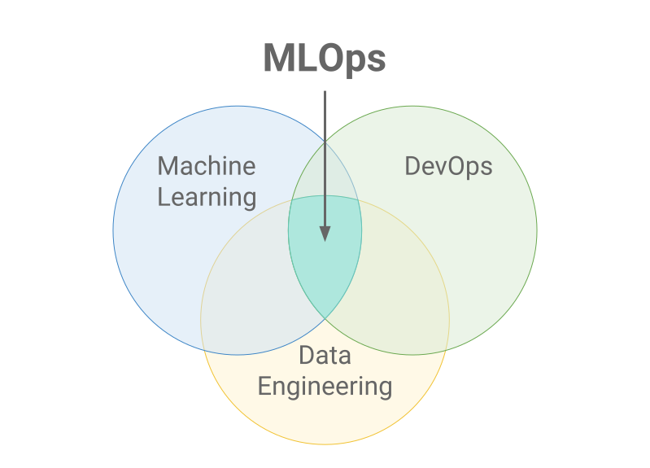
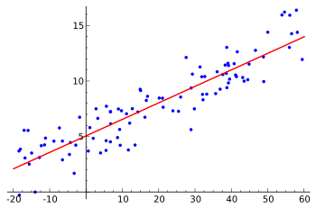
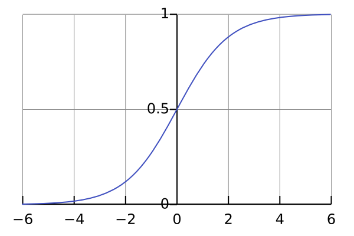
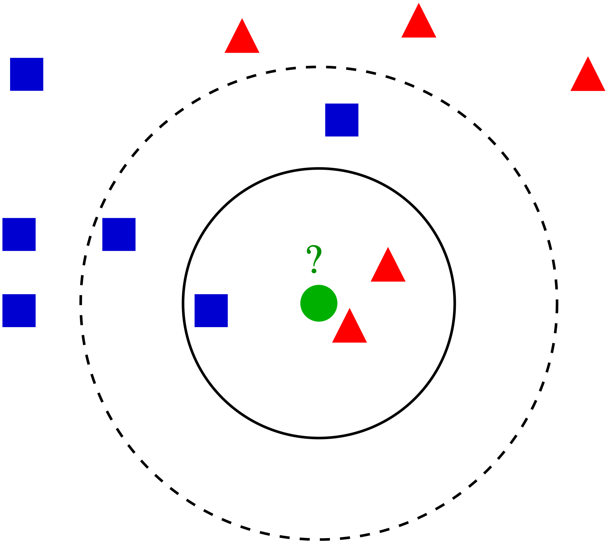
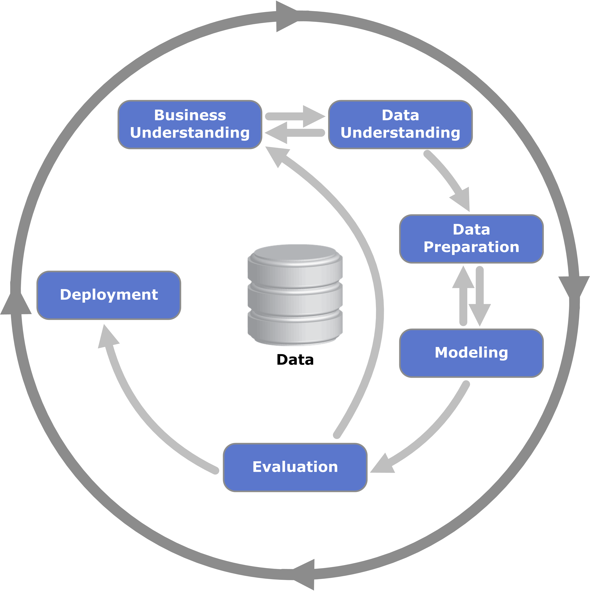
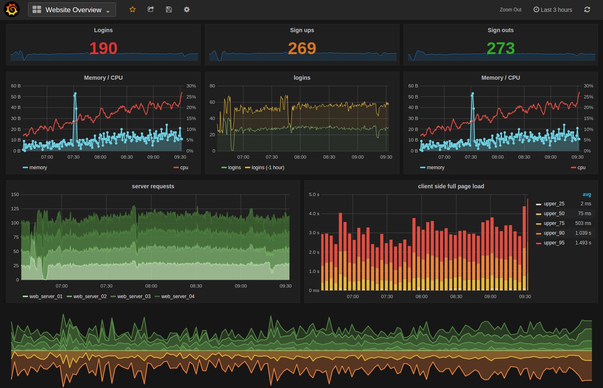

MLOps Methodology
Training a good model is only a small part of a real machine learning system. Around the model, a production system needs data collection and validation, feature pipelines, serving infrastructure, monitoring and a process to retrain and redeploy. MLOps (Machine Learning Operations) is the set of practices that brings the ideas of DevOps to machine learning, so that models can be deployed reliably and kept useful over time.


This course follows the full life cycle of a machine learning project: a refresher on machine learning, the stages of a project, deployment strategies, monitoring and packaging, and the specific way models should be developed when they are meant for production.
- Part 1 – Machine learning refresher
- Part 2 – The machine learning project life cycle
- Part 3 – Deployment strategies
- Part 4 – Monitoring and packaging
- Part 5 – Modeling for production
- Further reading
This page gives an overview of the course. The slides and notebooks are provided to students during the course.
Part 1 – Machine learning refresher
Families of machine learning
- Supervised learning: learn a mapping from inputs to known outputs (labels), for regression (predicting a number, such as a price) or classification (predicting a category, such as spam or not spam).
- Unsupervised learning: find structure in unlabeled data, for instance clusters of similar customers or a lower-dimensional representation.
- Reinforcement learning: an agent learns a behaviour by trial and error, from the rewards it receives from its environment.
The data itself can be structured (tables, databases) or unstructured (images, audio, text), which strongly influences the techniques used to label, augment and analyze it.
Three classic algorithms






The scikit-learn workflow
With scikit-learn, every supervised model follows the same four steps, which makes it easy to compare several estimators on the same data.
from sklearn.linear_model import LinearRegression
model = LinearRegression() # 1. choose an estimator and its hyperparameters
model.fit(X, y) # 2. train the model
model.score(X, y) # 3. evaluate it
model.predict(X_new) # 4. use itThe usual working method: split the data into training and test sets, train a first simple model, evaluate it on data it has never seen, then iterate on the features and hyperparameters.
Part 2 – The machine learning project life cycle
A machine learning project goes through four stages, with frequent back-and-forth between them. The course uses a speech recognition system as a running example, and a visual inspection system (detecting defects on products in a factory) as a second case study.
| Stage | Key questions | Speech recognition example |
|---|---|---|
| Scoping | Which problem? Which metrics? Which resources and timeline? | Decide to work on voice search; key metrics are accuracy, latency and throughput. |
| Data | How is the data defined, collected and labeled consistently? | Is the transcription convention consistent (« um », punctuation)? How much silence before and after each clip? |
| Modeling | Which model, which baseline, how to analyze errors? | Error analysis shows where the model is weak, for instance with background car noise. |
| Deployment | How to serve, monitor and maintain the model? | A mobile app sends audio to a prediction server; the system is monitored after release. |


Data drift and concept drift
Once in production, the world keeps changing, and a model that was correct when it was trained slowly becomes wrong:
- Data drift: the distribution of the inputs changes. Example: a new microphone model, or users who start speaking from noisier places.
- Concept drift: the relationship between inputs and outputs changes. Example: for a fraud detection model, the behaviour of customers changes during a crisis, so the same transaction no longer means the same thing.
Takeaway: deployment is not the end of a project, but the beginning of its maintenance.
Part 3 – Deployment strategies
Three common deployment cases: a new product or capability, the automation or assistance of a manual task, and the replacement of a previous ML system. In all cases, the goal is to send traffic gradually to the new model, monitor it, and be able to roll back. Like modeling, deployment is iterative.
- Shadow mode: the ML system runs in parallel with the human (or the old system). Its outputs are recorded and compared, but not used for any decision. This is a safe way to measure the performance of a model on real data before trusting it.
- Canary deployment: roll out the new model to a small fraction of the traffic (say 5%), monitor it, then ramp up gradually. An error only affects a few users and is detected early.
- Blue-green deployment: the old version (blue) and the new one (green) run side by side; the router switches all the traffic to green at once, and switching back to blue gives an immediate rollback.
Degrees of automation
Deployment is not all-or-nothing. A system can move step by step from human decisions to full automation, stopping at the level that makes sense for the application:
| Human only | Shadow mode | AI assistance | Partial automation | Full automation |
|---|---|---|---|---|
| no ML | ML runs, human decides | ML highlights, human decides | ML decides when confident, otherwise asks a human | ML decides |
In the visual inspection example, AI assistance could highlight the suspicious area on a picture for a human inspector, while partial automation would let the model accept or reject products by itself and send only the uncertain cases to a human.
Part 4 – Monitoring and packaging
Monitoring makes sure the system keeps meeting expectations after deployment. A good practice is to brainstorm everything that could go wrong, define metrics that would detect each problem, start with many of them, and gradually remove those that turn out not to be useful. Each metric gets a threshold that triggers an alert.
| Metrics | What they detect | Examples (speech recognition) |
|---|---|---|
| Software | the health of the service | memory, compute, latency, throughput, server load |
| Input | changes in the data (data drift) | average input length or volume, number of missing values, average image brightness |
| Output | changes in the behaviour of the model or of the users | number of empty outputs, number of times a user redoes a search or switches to typing |

.png){kind=link}
In practice
- Packaging: typically, the trained model is serialized and wrapped in a small prediction API (for instance with FastAPI), then packaged in a Docker image so that it runs the same way on every environment.
- Monitoring: the API exposes its metrics to Prometheus, which collects them periodically; Grafana displays them in dashboards and raises alerts.
Part 5 – Modeling for production
Model-centric vs. data-centric AI
The model-centric approach keeps the data fixed and improves the code of the model. The data-centric approach keeps the model fixed and improves the quality of the data: consistent labels, better coverage of rare cases, cleaning of noisy examples. In many practical projects, the second one brings more progress for less effort.
An iterative process
Model development is a loop: choose a model, hyperparameters and data → train → run an error analysis → decide what to improve. Error analysis groups mistakes by category (for instance car noise, people noise, low bandwidth) to focus the effort where it pays off most.
Beyond the average test score
A good average score on the test set is not enough to deploy a model:
- Disproportionately important examples: in web search, navigational queries (such as « YouTube ») must always return the right result, even if they are a small part of the data.
- Key slices of the data: a loan approval model must not discriminate by ethnicity, gender, location or language; a product recommender must treat all major categories of users, retailers and products fairly.
- Rare classes and skewed data distributions, where accuracy alone is misleading.
Establishing a baseline
Before trying to improve a model, establish a baseline: human-level performance (especially for unstructured data such as images and audio), a literature search, open-source implementations, or an older system. The baseline tells what is possible and where the irreducible error lies.
Getting started
- Do a quick literature search to see what is possible (courses, blogs, open-source projects).
- Reuse an open-source implementation when one is available.
- Take deployment constraints (latency, memory, cost) into account when choosing a model if a baseline is already established and the goal is to deploy; ignore them if the goal is only to explore what is possible.
Takeaway: a reasonable algorithm with good data often outperforms a great algorithm with poor data.
Further reading
- Andrew Ng, Machine Learning in Production, DeepLearning.AI – the course this one is inspired by.
- D. Sculley et al., « Hidden Technical Debt in Machine Learning Systems », NeurIPS, 2015.
- Chip Huyen, Designing Machine Learning Systems, O'Reilly, 2022.
- Google Cloud, MLOps: Continuous delivery and automation pipelines in machine learning.
- Martin Fowler, BlueGreenDeployment, and Danilo Sato, CanaryRelease, martinfowler.com.